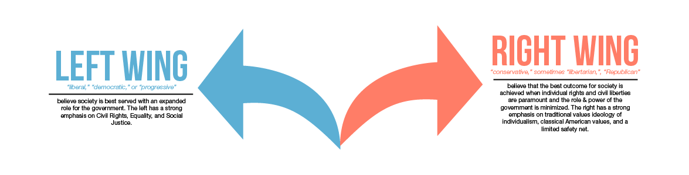
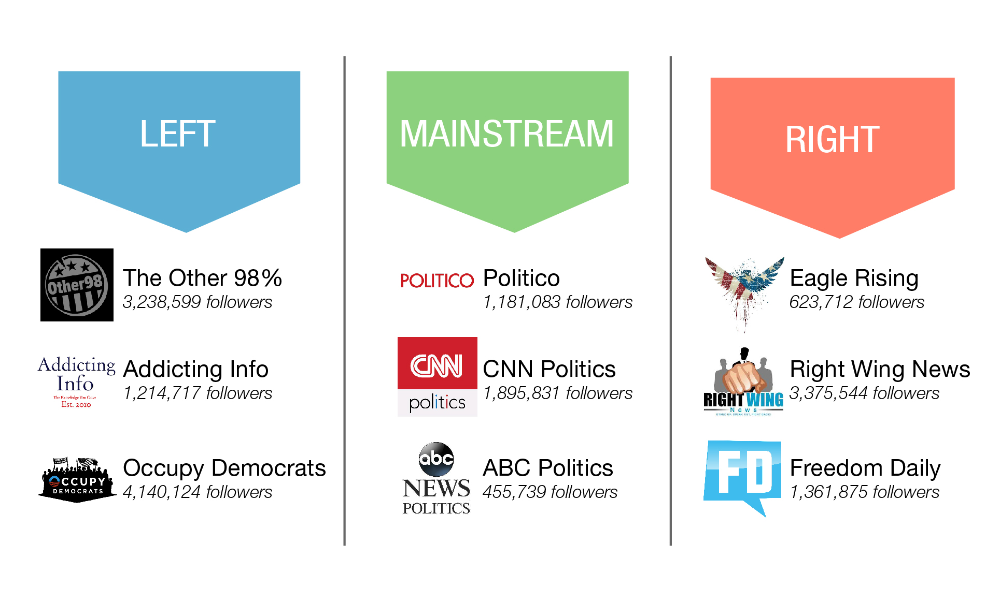

In US politics, left-right political spectrum is often used to classify political positions, ideologies, and parties. While left wing tend to believe in equality and liberality, right wing is more believe with conservatives American values.
Along with the evolution of technology, social media has became an important tool for US politicians to increase their electability. Hundred thousand fans from left or right wing are engaged by various hyperpartisan Facebook pages. These Facebook pages play an important role in steering people’s opinion which impacted to politicians electability. Hyperpartisan pages tend to post controversial information leading to high number of shares and comments.
In order to portray the credibility of hyperpartisan Facebook pages, BuzzFeed News held an analysis by gathering and cross-checking three large hyperpartisan pages each from the right and from the left, as well as three large mainstream political news pages. The data from mainstream pages are added as a comparison. Total of 2,282 posts were rated into “mostly true,” “mixture of true and false,” “mostly false,” or “no factual content” category. The result of the analysis are portrayed in the visualization below.